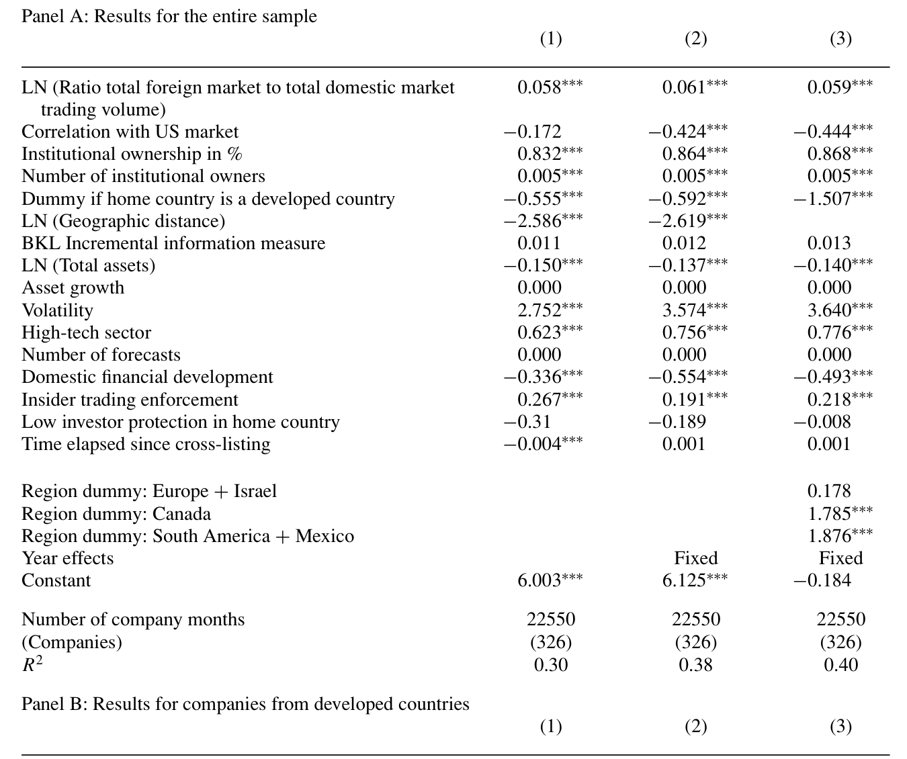
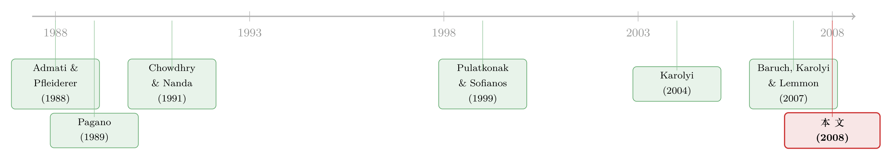

把股票挂到美国去，交易真的会跟过去吗？
本文读的是 Halling, Pagano, Randl & Zechner (2008, Review of Financial Studies)：一家公司去美国 交叉上市 (cross-listing) 之后，交易并不会乖乖地全跑到美国，也不会乖乖地全留在本土——交易量怎么在两地分配，取决于「美国投资者有多熟悉这家公司」和「本国市场有多不靠谱」。对中位数公司而言，刚上市时美国的成交量约为本土的 50%，六年后回落到 25%；而真正决定这条曲线高低的，是地理距离、本国金融发展水平和内幕交易保护。
1 一个看似简单、其实很拧巴的问题
先从一个常识说起。一家公司把股票同时挂在两个交易所——比如本土一个、美国一个——交易会发生在哪里？
直觉上你可能觉得「两边都有呗」。但理论偏偏不这么想。市场微观结构里有一条很硬的规律：流动性会自我吸引。一个市场里的参与者越多，任意一笔订单对价格的冲击就越小，市场就越有深度；而深度越好，又会吸引更多人来这里交易。Admati 和 Pfleiderer (1988)、Pagano (1989)、以及 Chowdhry 和 Nanda (1991) 的模型都指向同一个结论：当一只股票可以在两个交易成本相同的市场上买卖时，理性的交易者会全部挤到其中一个市场去。
换句话说，理论预测的不是「两边都有」，而是「赢家通吃」。
可现实里我们偏偏看到大量交叉上市的股票，在本土和美国同时保有活跃的交易。这就是本文要拆解的第一重张力：既然有这么强的聚集力 (agglomeration)，为什么两个市场没有合并成一个？
答案，作者一开篇就给了：摩擦。交易成本的差异、时区造成的「俘获型客户」(captive clientele)、信息的不对称——正是这些摩擦，挡住了那股把交易往一处拽的「引力」。于是问题就被精确化成了两问：
第一问：交叉上市之后，美国（外国）市场到底能抢到多少交易量？这个份额由什么决定？ 第二问：开了美国这个新场子，本土市场的交易会被「抽走」（替代），还是反而被带火（互补）？
围绕这一个核心——交易到底「住」在哪里，以及为什么——本文把一篇看似平淡的实证文章，写成了一张关于信息与制度的地图。
2 三股力量：交易为什么会偏向某一边
要回答「份额由什么决定」，作者没有上来就跑回归，而是先去理论里把可能相关的变量一个个拎出来，归成三类。这一步很关键，因为它决定了后面回归里每个变量的预期符号——实证的可信度，一半就押在「你事先敢不敢预测方向」上。
第一类，非信息驱动的交易 (non-information-based trading)。 假设各国投资者出于交易成本或监管约束，只在本地买卖。那么一只交叉上市股票在美国的成交量，就会大致正比于美国市场的总交易活跃度——美国这个「池子」越大，分给它的水越多。此外，与美国市场相关性越低的股票，对美国投资者的分散化价值越高，外国交易量也应更大。
第二类，信息驱动的交易 (information-based trading)。 这是全文的灵魂。核心逻辑是：信息在哪里产生，知情交易就在哪里发生。 如果价值相关的信息主要从公司总部「往下渗」（Davis and Henderson, 2004；Pirinsky and Wang, 2006），那么知情交易就会集中在离总部最近的市场。地理距离 (geographical distance) 和 语言差异 (language difference) 因此被当作美国投资者信息劣势的代理——离得越远、语言越不通，本土越能留住知情交易。Grinblatt 和 Keloharju (1999)、Coval 和 Moskowitz (1999) 早就发现投资者组合存在「就近偏好」，Hau (2001) 则证明在德国 Xetra 市场，非德语区的交易者赚得更少。
顺着这条线，作者给出一串可检验的预测：股价对私有信息越敏感，知情交易越会留在本土——而小公司、高成长、高波动恰恰更不透明、更受私有信息驱动，所以它们的外国交易份额应当更低。这里有个值得记下的细节：作者特意没有把 beta 当成独立变量，因为
$$\beta_{i,m} = \rho_{i,m}\,\sigma_i\,\sigma_m^{-1}$$
既然相关性 \(\rho_{i,m}\) 和波动率 \(\sigma_i\) 已经各自作为解释变量进了模型，beta 就不会再带来新信息。这种对共线性的克制，是好实证的手艺。
第三类，交易摩擦 (trading frictions)。 交易成本更低的市场会吸走更多交易。可惜各国的真实交易成本难以测量，于是作者用 金融发展水平 (financial development)——以股市市值和私人信贷占 GDP 的比重衡量——作为交易成本的反向代理：本国金融越发达，交易成本越低，外国市场就越抢不到份额。时区差异、以及对 内幕交易的保护 (protection against insider trading) 也归在这一类：本国对内幕交易管得越松，投资者越愿意躲到规则更严的美国去交易。
作者把这三类变量及其预期符号整整齐齐列成了一张表（论文的 Table 1）——这其实是全文的「说明书」。
3 数据与第一组事实
样本横跨 1980 到 2001 年，覆盖 34 个国家、437 家在美国交叉上市的公司。观测单位是「公司—年」，关键被解释变量是外国（美国）交易量相对本土交易量的比率。
先看一组不带回归的「素描」。对中位数公司而言，交叉上市刚发生时，美国的交易量约为本土的 50%；但这只是一个起点——六年之内，这个比率回落到约 25%。
这条「先高后低」的曲线本身就很有意思：它说明美国市场在上市初期确实抢到了可观的份额，但本土那股「引力」并没有消失，时间一长，交易又被慢慢拉了回去。可一旦你把样本拆开，会发现这条平均曲线掩盖了巨大的国别和公司间差异——而差异，才是故事真正展开的地方。
4 反转：谁的美国份额更高？
现在把三类变量一起放进回归。结论可以浓缩成一句话：美国市场抢到的份额，在「美国投资者更熟悉、本国制度更不靠谱」时更高。
具体来说，一家公司若来自地理上离美国更近、资本市场欠发达、且对内幕交易保护薄弱的国家，它在美国的交易份额就更大。这三点其实指向同一个机制：地理临近降低了美国投资者的信息劣势，本国金融落后和投资者保护缺失则让美国市场在「提供流动性」上拥有比较优势。

Table 4: has three panels, for three different samples: the entire sample
但故事在这里出现了第一个反转。作者把样本按「发达市场 vs 新兴市场」一拆，公司层面的特征几乎讲起了相反的话：
- 对发达国家的公司，规模小、波动高、科技导向的企业，美国交易份额明显更高。一个合理的解释是，美国的分析师和投资者更擅长评估这类公司——这也正是 Pagano, Röell 和 Zechner (2002) 发现欧洲高成长、科技型公司更倾向于来美国（而非欧洲其他地方）上市的原因。
- 对新兴国家的公司，这套逻辑失灵了：外国交易量反而与波动率负相关。同样是「高波动」，在发达国家意味着「美国人更懂、来美国交易」，在新兴国家却意味着「信息太不透明、美国人退避三舍」。
第二个反转藏在时间里。美国市场的相对吸引力并非一成不变：作者的估计显示，从 1981 到 2001 年，美国对发达市场公司的吸引力在下降，而对新兴市场公司的吸引力在上升，且这一差异在样本后期统计上尤其显著。这与 Zingales (2006) 等人关于「美国资本市场是否在丧失竞争力」的讨论遥相呼应——发达市场的公司似乎越来越「不需要」美国了。
（顺带一提，交叉上市本身的动机远不止「找流动性」这一条；关于把股票挂到国外去如何成为一道防收购的护城河，可参见《把股票挂到国外去，竟是一道防收购的「护城河」》。）
5 第二问：本土市场会被「抽干」吗？
开了美国这个新场子，本土的交易会怎样？理论上方向是不确定的（Hargis and Ramanlal, 1998）。一方面，交叉上市可能造成 交易转移 (trade diversion)——原本在本土交易的外国投资者，为了方便或为了更严的内幕交易保护，转去美国下单。另一方面，它也可能带来 净增交易：美国与本土做市商的竞争、外国市场额外产生的信息，反而会把本土的流动性也带起来。
此前有限的证据——而且几乎都集中在新兴市场——倾向于「抽干」一说。Domowitz, Glen 和 Madhavan (1998) 发现墨西哥公司发行 ADR 后本土流动性下降；Karolyi (2004) 基于 12 个拉美和亚洲国家的总量数据，发现 ADR 项目越普及，纯本土上市公司的换手率越低；Levine 和 Schmukler (2006) 在 45 个新兴经济体、2700 多家公司的样本里也报告了本土交易的萎缩。
本文的贡献，是把这个问题从「只看新兴市场」扩展到了全样本，于是又一次看到了那条熟悉的裂缝：
整体上，本土市场并没有因为交叉上市而受损——恰恰相反，本土换手率在上市当年显著上升。 但这条好消息只属于发达市场：发达市场公司的本土换手率上市后永久性地抬高了，新兴市场公司则看不到这种增长。
更锋利的对比来自「按内幕交易规则的执法力度」拆分样本：在执法有效的国家，交叉上市后本土交易量上升；而在执法糟糕的国家，本土交易量急剧下跌。
这恰恰把全文的核心机制焊死了——投资者保护（尤其是内幕交易执法）是那条决定交易往哪里流的暗线。当本国保护薄弱、逆向选择成本高时，投资者用脚投票，把交易搬去美国，本土于是被抽干；当本国保护到位时，交叉上市带来的竞争与信息反而滋养了本土市场。同样是「开一个海外场子」，结局是繁荣还是失血，取决于你家原本的制度地基。
6 文献脉络
把这篇文章放回它生长的那条线上，逻辑会更清楚。
最早的源头是一组关于交易聚集的理论：Admati 和 Pfleiderer (1988) 刻画了交易量与价格波动的日内模式，Pagano (1989) 证明在交易成本相同时交易会集中到单一市场，Chowdhry 和 Nanda (1991) 在非对称信息框架下得到同样的聚集倾向。这三篇共同立起了那个「赢家通吃」的基准——也正是本文要去解释「为什么没有发生」的对象。
接着，一个自然的问题是：现实中两个市场既然能共存，份额到底怎么分？Pulatkonak 和 Sofianos (1999) 用 1996 年 NYSE 上交叉上市股票的数据，指出时区差异会压低美国的交易份额，算是把「制度因素决定份额」这件事第一次摆上台面。

然后，关于「交叉上市为什么发生」的研究给本文喂了关键的变量直觉：Pagano, Röell 和 Zechner (2002) 发现欧洲科技型、高成长公司偏爱来美国上市；Sarkissian 和 Schill (2004) 强调地理临近在上市地选择中的分量。与此同时，「交叉上市对本土的影响」这条支线在新兴市场上不断积累证据——Karolyi (2004) 和 Levine 与 Schmukler (2006) 都指向本土交易的萎缩。
但真正关键的一步，是 Baruch, Karolyi 和 Lemmon (2007) 提出的「增量信息」度量（BKL measure）：它用「同时纳入本国和外国市场指数」与「只纳入本国指数」两个回归的 \(R^2\) 之差，来衡量外国市场对一只股票信息生成的边际贡献。本文把这个度量直接拿来当解释变量——外国市场产生的信息越多，外国交易份额就越高。
本文所处的位置，正是把上面这两条支线——「份额由什么决定」与「本土会不会受损」——用同一套三类变量框架、同一个跨 34 国的大样本串起来，并且第一次系统地把「发达 vs 新兴」「执法强 vs 执法弱」的异质性讲透。
7 评论与延伸（Q&A + 研究方向）
(a) 几个可能的疑问
Q：交叉上市本身是公司自己选的，这种选择性偏误会不会污染所有结论？
会，而且这是本文识别上最大的软肋。哪些公司去美国、什么时候去，都是内生决策——科技公司去美国可能正因为美国投资者更懂它，于是「科技 → 美国份额高」既可能是结果也可能是上市动机本身。作者主要靠「事先用理论预测每个变量的符号」来防止事后讲故事，但这终究是横截面相关性，不是因果。读这篇文章，最好把它当作一张精细的相关性地图，而非因果估计。
Q：「美国份额高」到底是因为美国吸引力强，还是因为本土太弱？
文章的妙处恰恰在于：这两件事在数据里是同一枚硬币的两面。本国金融越落后、保护越差，等价于美国的「比较优势」越大。比率这个被解释变量本身就是相对的，所以无法、也不必把「分子变大」和「分母变小」完全分开——第二问（本土被抽干）其实就是在补上「分母」那一侧的故事。
Q：时区和地理距离高度相关，怎么分得清是「信息劣势」还是「交易摩擦」？
分不太清，作者自己也坦承这一点。地理距离降低的是信息的质量与时效（信息机制），时区差异制造的是交易时段不重叠的摩擦（成本机制），但二者在数据里几乎共线。所以「地理距离 → 美国份额」这个系数，是信息和摩擦两种机制的混合体，不能干净地归因到某一条。
Q：本土换手率上升，能直接说成「流动性变好」吗？
不能划等号。换手率是交易量／市值，量上去了不代表买卖价差变窄、深度变好。作者度量的是交易活跃度而非交易成本。真正的流动性改善需要看价差和价格冲击——这正是后续文献（如对加拿大股票的微观结构研究）要补的功课。
Q：为什么波动率在发达市场是正号、在新兴市场是负号？这不是自相矛盾吗？
不矛盾，反而是全文最漂亮的地方。同一个「高波动」，在制度成熟的发达国家被读成「这家公司值得美国专业投资者去钻研」，于是吸引美国交易；在信息环境糟糕的新兴国家被读成「太不透明、逆向选择风险高」，于是美国人避而远之。变量的符号会随制度环境翻转，说明驱动交易分布的从来不是变量本身，而是它背后的信息含义。
Q：这套二十多年前的结论，在 ADR 衰退、电子化交易和全球化的今天还成立吗？
部分要打折扣。文章已经发现 1981–2001 年间美国对发达市场公司的吸引力在下降；2000 年后 SOX 法案、欧洲市场一体化、算法交易的普及，很可能进一步改变了「交易住在哪里」的格局。把同一框架搬到 2002 年之后的样本，本身就是一个值得做的复制与更新。
(b) 几个可能的研究问题与提案
- 把「份额」换成「成本」重做一遍。
- 【经济故事】本文用换手率衡量交易往哪里去，却没回答「在哪交易更便宜」。如果交叉上市真把交易拽去了美国，那本土的买卖价差和价格冲击应当如何变化？「量」与「价」是否同向？
-
【可行性】中。需要两地的日内或 TAQ 级别数据（NYSE/Nasdaq 一侧好办，本土交易所一侧因国而异），识别上可用上市事件做事件研究。难点是多国微观结构数据的可得性与可比性。
-
把镜头从「股票」移到「公司债」。
- 【经济故事】债券的交易高度场外、对信息和制度更敏感，外资持有人在信用市场的角色也越来越重。一家公司若在海外发行或交叉挂牌其债务，交易会不会同样按「本国保护强弱」分流？内幕交易执法对债券交易迁移的影响，可能比股票更大。
-
【可行性】中。美国一侧可用
TRACE，但多国公司债的成交地点数据稀缺，跨境拆分是真正的瓶颈；可先从有 ADR 又有美元债的公司这个交集起步。（关于危机里谁在公司债市场逆向接盘，可参见《差点死掉的那个市场：一场公司债流动性危机的微观解剖》。） -
用一次外生的「保护冲击」做干净识别。
- 【经济故事】本文的内幕交易执法是横截面差异，难言因果。若某国突然加强（或引入）内幕交易执法，本文预测本土交易应当回流、美国份额下降——这是一个可被证伪的、清晰的预测。
-
【可行性】高。Bhattacharya 和 Daouk (2002) 已整理出各国首次执行内幕交易法的年份，可直接做交错事件的双重差分，去看交叉上市公司的两地交易份额如何随执法落地而移动。
-
「美国吸引力下降、新兴吸引力上升」的时间趋势，背后到底是什么？
- 【经济故事】本文记录了这个趋势却没解剖它。是 SOX 抬高了来美成本？是欧洲市场一体化提供了替代？还是新兴市场自身制度改善反而让它们更需要美国的「制度租用」？把这个趋势拆回具体的政策与事件，是一篇独立文章。
-
【可行性】中高。需要更长的面板（延伸到 2020 年代）与一系列政策时点，识别靠多重事件叠加，挑战在于同期发生的事件太多、难以两两隔离。
-
外资持有人结构与交易迁移的直接对接。
- 【经济故事】本文坦言无法直接观测外国散户，只能用机构持股代理。若能拿到逐笔的投资者国别标签，就能检验「信息劣势」机制的微观基础：到底是哪一类外国投资者把交易留在了美国？
- 【可行性】低到中。投资者国别级别的持仓与成交数据极难获得，通常只在个别市场（如芬兰、台湾的全样本数据集）才有；可行路径是借用这些「天然实验室」做机制验证，再外推。（关于外资是否真的加速了信息传递，可参见《外资来了，全球新闻就传得更快吗？》。）
8 我的判断与参考文献
贡献。 这篇文章最大的价值，不在于哪一个系数，而在于它提供了一套统一的解释框架：交易在两地之间的分布，是「美国投资者的熟悉程度」与「本国制度的可靠程度」这两股力量的角力结果。它把零散的、各说各话的前期证据（有人说本土被抽干、有人说不会）收进了同一个「发达 vs 新兴、强保护 vs 弱保护」的分类里，让矛盾的结论各归其位。波动率符号在发达与新兴市场之间的翻转，是我个人认为全文最有说服力的一笔——它说明驱动力是信息含义，而非变量表象。
对识别的担忧。 必须诚实地说，这本质上是一篇横截面相关性的文章。交叉上市的内生选择、地理距离与时区的共线、用换手率代理流动性、用机构持股代理外国投资者——每一处都意味着系数不能被直接读成因果。文章的「事先预测符号」是一种纪律，但不是识别。
后续想看到什么。 我最想看到的，是把这套框架接到一次外生的制度变化上（比如某国首次执行内幕交易法），用差分去验证「本土交易回流」的预测；以及把它从股票延伸到公司债与外资持有人——在信用市场里，信息和制度的角力很可能比股票市场更剧烈，而那恰恰是目前证据最薄的角落。
参考文献
- Admati, A., and P. Pfleiderer (1988). A Theory of Intraday Patterns: Volume and Price Variability. Review of Financial Studies 1(1), 3–40.
- Baruch, S., A. Karolyi, and M. L. Lemmon (2007). Multi-market Trading and Liquidity: Theory and Evidence. Journal of Finance 62(5), 2169–2200.
- Bhattacharya, U., and H. Daouk (2002). The World Price of Insider Trading. Journal of Finance 57, 75–108.
- Chowdhry, B., and V. Nanda (1991). Multimarket Trading and Market Liquidity. Review of Financial Studies 4(3), 483–511.
- Domowitz, I., J. Glen, and A. Madhavan (1998). International Cross-listing and Order Flow Migration: Evidence from an Emerging Market. Journal of Finance 53, 2001–27.
- Hau, H. (2001). Location Matters: An Examination of Trading Profits. Journal of Finance 56(5), 1959–83.
- Karolyi, G. A. (2004). The Role of American Depositary Receipts in the Development of Emerging Markets. Review of Economics and Statistics 86(3), 670–90.
- Levine, R., and S. L. Schmukler (2006). Internationalization and Stock Market Liquidity. Review of Finance 10(1), 153–87.
- Pagano, M. (1989). Trading Volume and Asset Liquidity. Quarterly Journal of Economics 104(2), 255–74.
- Pagano, M., A. A. Röell, and J. Zechner (2002). The Geography of Equity Listing: Why Do Companies List Abroad? Journal of Finance 57(6), 2651–94.
- Pulatkonak, M., and G. Sofianos (1999). The Distribution of Global Trading in NYSE-Listed Non-U.S. Stocks. NYSE Working Paper 99-03.
- Sarkissian, S., and M. J. Schill (2004). The Overseas Listing Decision: New Evidence of Proximity Preference. Review of Financial Studies 17, 769–809.